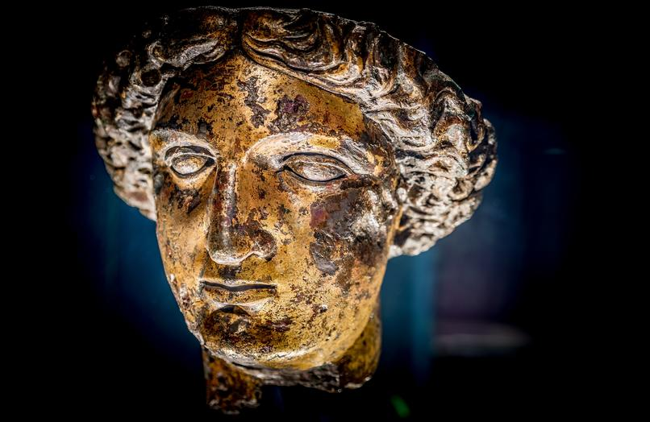
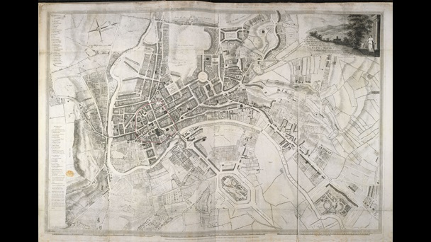
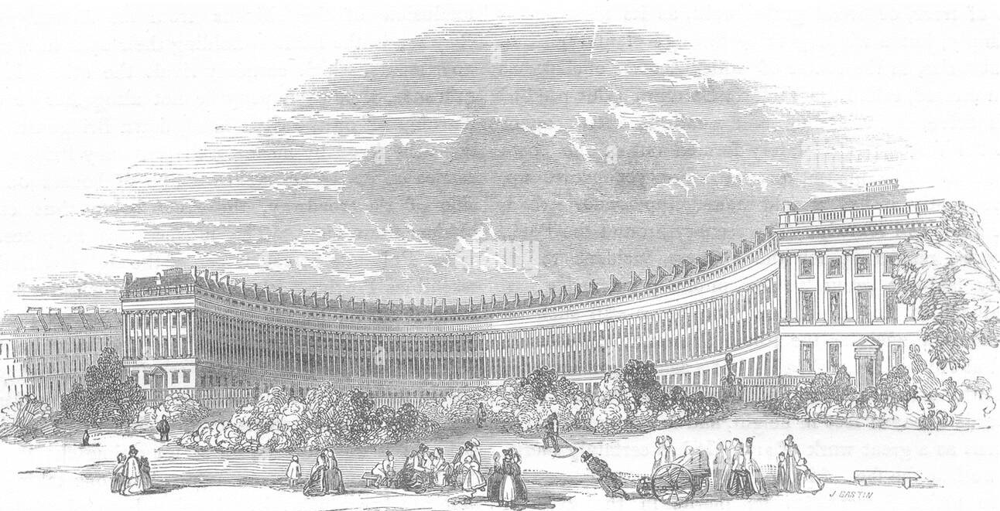
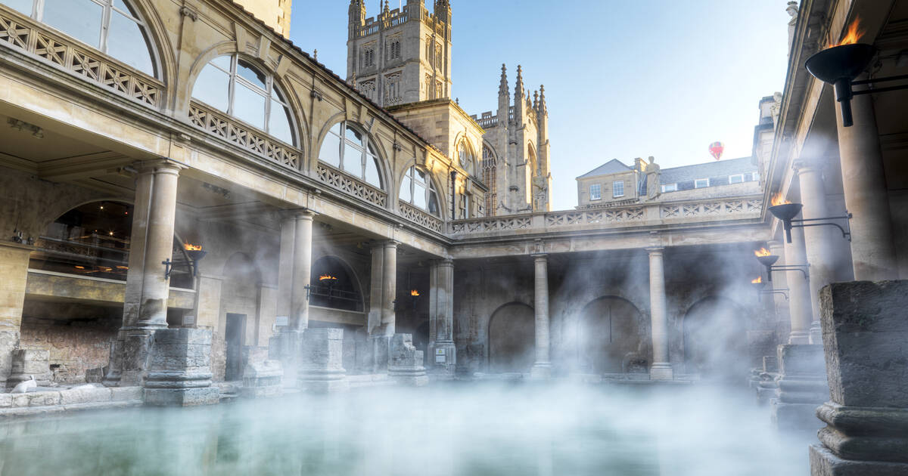

The History of Bath
Celtic Times
Bath was founded by Bladud, the eldest son of the legendary King Lud. Among the most significant Celtic works of art of Roman Europe is the outstanding sun god's head that welcomed pilgrims to the temple of Sulis Minerva in Bath. Although Bath was in fact built nearly 1,000 years after Bladud, it was without doubt a major Celtic place of power. The hills around Bath such as Bathampton Down saw human activity from the Mesolithic period. Several Bronze Age round barrows were opened by John Skinner in the 18th century. Bathampton Camp may have been an Iron Age hill fort or stock enclosure.
Roman Times
The Romans had a genius for appropriating local deities and blending them with their own gods.
So, Sul became Sulis Minerva when they built their temple where the druids grove had stood.
Sul, goddess of arcane prophecy, was tempered with the cultured arts and science of Minerva.
Although still mostly buried under magnificent Georgian streets, the Roman ruins in Bath are unsurpassed in Britain.
The Romans started building their great baths and temple at the sacred spring soon after the Conquest, in the middle of the 1st Century AD.
They named their city Aque Sulis and soon transformed the Celtic druids grove into one of the major therapeutic centres of the West.
The Romans revered the Spring just as the Celts had done; by the 3rd century its stunning temple and luxurious baths attracted pilgrims from throughout the Roman world.
Messages to her scratched onto metal, known as curse tablets, have been recovered from the Sacred Spring by archaeologists.
These curse tablets were written in Latin, and usually laid curses on people by whom the writer felt they had been wronged.
For example, if a citizen had his clothes stolen at the baths, he would write a curse, naming the suspects, on a tablet to be read by the Goddess Sulis Minerva.

Minerva's Head
Saxon Times
Bath is well known for being the site of the legendary battle of Badon 500AD, which the Welsh annals say was the twelfth and greatest battle fought by Arthur against the invading Saxons.
Bath finally fell to the Saxons at the Battle of Dyrham Park just to the north of the city.
Although the great Roman temple and baths were lost to flood and ruin, Bath continued as an important religious site with the founding of a Saxon monastery in the 7th century.
Nennius, a ninth-century historian, mentions a "Hot Lake" in the land of the Hwicce, which was along the Severn, and adds "It is surrounded by a wall, made of brick and stone, and men may go there to bathe at any time, and every man can have the kind of bath he likes.
If he wants, it will be a cold bath; and if he wants a hot bath, it will be hot".
Bede also describes hot baths in the geographical introduction to the Ecclesiastical History in terms very similar to those of Nennius.
King Offa of Mercia gained control of this monastery in 781 and rebuilt the church, which was dedicated to St. Peter.
In the 9th century the old Roman street pattern had been lost and Bath had become a royal possession, with King Alfred laying out the town afresh, leaving its south-eastern quadrant as the abbey precinct.
In the Burghal Hidage Bath is described as having walls of 1,375 yards (1,257 m) and was allocated 1000 men for defence. During the reign of Edward the Elder coins were minted in the town, based on a design from the Winchester mint but with 'BAD' on the obverse relating to the Anglo-Saxons name for the town Baðum, Baðan or Baðon, meaning "at the baths," and this was the source of the present name.
Edgar of England was crowned king of England in Bath Abbey in 973.
Norman Times
King William Rufus granted the city to a royal physician, John of Tours, who became Bishop of Wells and Abbot of Bath, following the sacking of the town during the Rebellion of 1088. It was papal policy for bishops to move to more urban seats, and he translated his own from Wells to Bath. He planned and began a much larger church as his cathedral, to which was attached a priory, with the bishop's palace beside it. New baths were built around the three springs.
The Dark and Middle Ages
The great 16th century traveller John Leland was inspired by Bath's Roman ruins but not at all impressed by the hot water which 'rikketh like a sething potte'.
By the 15th century, Bath's abbey church was badly dilapidated and in need of repairs. Oliver King, Bishop of Bath and Wells, decided in 1500 to rebuild it on a smaller scale.
The new church was completed just a few years before Bath Priory was dissolved in 1539 by Henry VIII.
The abbey church was allowed to become derelict before being restored as the city's parish church in the Elizabethan era, when the city experienced a revival as a spa.
The baths were improved and the city began to attract the aristocracy. Bath was granted city status by Royal charter by Queen Elizabeth I in 1590.
During the English Civil War, the city was garrisoned for King Charles the 1st and seven thousand pounds spent on fortifications.
However upon the appearance of parliamentary forces the gates were thrown open and the city surrendered, and it then become a significant post in Somerset for the New Model Army under William Waller.
It was retaken by royalists following the Battle of Lansdowne which was fought on 5 July 1643 on the northern outskirts of the city.
Georgian Times
Bath's population multiplied itself by well over ten times during the course of the 18th century.
From a still small classic medieval city of just 2000 people, with its market place and many mangers and defensive walls, Bath was transformed into a fashionable metropolis of nearly 30,000 citizens in just 100 years.
Three visionary and talented men led this transformation.
The first famous local figure is "The Man of Bath" - Ralph Allen.
His fortune and the new splendour of Bath were made with limestone cut from his quarries near-by. To advertise the same golden stone, he built a fabulous mansion in Prior Park and it was soon followed and used on other prestigious projects around the country besides most of the new Bath.
Next and probably Bath's most famous architect was John Wood who died before his dream of creating a new Bath was finally realised, developing the newly fashionable Palladian style and incorporating into it Masonic and Druid references.
However, the work was superbly completed by his son.
'I proposed to make a grand Place of Assembly, to be called the Royal Forum of Bath; another place, no less magnificent, for the Exhibition of Sports, to be called the Grand Circus; and a third place, of equal state with either of the former, for the Practice of Medicinal exercises, to be called the Imperial Gymnasium,' Wood the Elder wrote.
Soon Queen Square and the Parades rose gloriously from the medieval city. Work began on the King's Circus, which was completed by Wood's son.
Its bold and brilliant design amazed 18th century society.
John Wood the Younger then designed the Royal Crescent "the summit of Palladian achievement in Bath".
John Wood the Younger's Royal Crescent was the first use of the crescent shape in urban design in Europe and was much admired.
Its deliberate intention was to unify a row of terrace houses with a palatial structure.
The third man of influence was the wigged adventurer and dandy Richard 'Beau' Nash, a drop-out from Oxford University, the army and the law.
He earned his money as a gambler and immaculate socialite.
With Queen Anne's visit to Bath in 1702 Beau Nash saw his chance to make his fortune and influential friends.
Immediately, he set about transforming Bath into the kind of fashionable resort in which his gambling skills would thrive by becoming Master of Ceremonies.
He also used his position and influence to upgrade social behaviour, standards of dress and social ranking in the society of the day.

Plan of Bath 1790
Regency Times
"The "Regency Period" is a term not usually confined to the Regency rule of Frederick, Prince of Wales (February 1811 to January 1820).
Historians differ, but in terms of fashion, design, the habits of society, in other words what was "in", the very things which had made Bath famous and much visited, the period began in about 1800.
Over the next several years, Bath was gradually eclipsed as the "in" resort by Brighton, favoured by "Prinny" as the Prince of Wales became known. As the poet William Cowper foresaw:
"....now alike, gay widow, virgin, wife,
Ingenious to diversify dull life,
In coaches, chaises, caravans and hoys,
Fly to the coast for daily, nightly joys.
And all, impatient of dry land, agree
With one consent to rush into the sea"
Bath's architects developed further grandiose schemes, but not all succeeded or were built;
their adoption of the Greek Revival style did not resonate as easily with its former visitors either as the Palladian tradition had done so successfully in the 18th Century,
or as did the new Regency Style - exemplified in Brighton's grand terraces near that city's own Royal Crescent on its sea-front.
With the decline in the numbers of affluent and important visitors,
Bath became a quieter city and its architectural glories were not fully valued and appreciated again for another 140 years.
One legend of Bath's and the Royal Crescent's heyday is preserved in the annals of Bath Preservation Trust.
The Trust's guide to its museum and headquarters at No.1 records that the Duke of York, 2nd son of George III, (not Prinny) "took the first house in Royal Crescent" in 1796, but soon moved to No.16; he is elsewhere recorded as paying the rates for No.15 in 1799.
The population of the city had reached 40,020 by the time of the 1801 census, making it one of the largest cities in Britain.
William Thomas Beckford bought a house in Lansdown Crescent in 1822, eventually buying a further two houses in the crescent to form his residence.
Having acquired all the land between his home and the top of Lansdown Hill, he created a garden over half a mile in length and built Beckford's Tower at the top.
Victorian Times
In 1830, Princess Victoria opened the Royal Victoria Park. It has 56 acres of parkland, contains trees and shrubs from around the world and was designed by the City architect, Edward Davis. Victoria did not return to Bath as Queen. During her visit, it is said that a resident of Bath commented on the thickness of her ankles. The observation was duly reported to the Princess, causing her to shun the City for the duration of her reign. Prince Albert did visit and on his arrival was met by a group of city dignitaries, all of whom were formally attired in dark robes. As they looked so similar that he was unable to identify the Mayor. As a result of this, Queen Victoria decreed that Mayors should wear a robe and Chain of Office. These items were presented to the Mayor of Bath, Frederick Dowding, in 1850.

Royal Crescent 1850
Modern Times
Emperor Haile Selassie I of Ethiopia spent the four years of his exile, from 1936 to 1940, at Fairfield House in Bath.
During World War II, between the evening of 25 April and the early morning of 27 April 1942, Bath suffered three air raids in reprisal for RAF raids on the German cities of Lübeck and Rostock, part of the Luftwaffe campaign popularly known as the Baedeker Blitz.
Over 400 people were killed, and more than 19,000 buildings were damaged or destroyed.
Houses in the Royal Crescent, Circus and Paragon were burnt out along with the Assembly Rooms, while part of the south side of Queen Square was destroyed.
A postwar review of inadequate housing led to the clearance and redevelopment of areas of the city in a post war style, often at variance with the local Georgian style.
In the 1950s the nearby villages of Combe Down, Twerton and Weston were incorporated into Bath to enable the development of further housing, much of it council housing.
In the 1960s and early 1970s some parts of Bath were unsympathetically redeveloped, resulting in the loss of some 18th- and 19th-century buildings.
This process was largely halted by a popular campaign which drew strength from the publication of Adam Fergusson's The Sack of Bath.
Controversy has revived periodically, most recently with the demolition of the 1930s Churchill House, a neo-Georgian municipal building originally housing the Electricity Board, to make way for a new bus station.
This is part of the Southgate redevelopment in which an ill-favoured 1960s shopping precinct, bus station and multi-story car park were demolished and replaced by a new area of mock-Georgian shopping streets.
In the 1970s and 1980s it was recognised that conservation of historic buildings was inadequate, leading to more care and reuse of buildings and open spaces.
In 1987 the city was selected by UNESCO as a World Heritage Site, recognising its international cultural significance.

fghhd